岩場・鎖場のある山
| 登山道に岩場のある山、鎖場のある山の一覧です。 | |||
| これまで登山道で出会った岩場・鎖場を難易度・鎖場数を数値化してまとめました。 | |||
| 難易度は岩場の難易度であって、必ずしも登山道の難易度とは一致しません。 | |||
| 難易度 | ： | ★ | ：簡単な鎖場。ほとんどの人が問題なく通過できる。 |
| ★★ | ：それなりに難しい鎖場。コース通過のポイントとなる。 | ||
| ★★★ | ：非常に難しい岩場、鎖場。岩場に慣れた人以外は通過しない方が無難。 | ||
| 鎖場数 | ： | ★ | ：1～2箇所の鎖場がある。 |
| ★★ | ：数か所の鎖場がある。 | ||
| ★★★ | ：岩場・鎖場が連続する。 | ||
| 写真 | 山名・コース名 | 難易度 | 鎖場数 | 訪問日 | コメント |
|---|---|---|---|---|---|
| 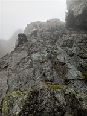 | 剱岳 | ★★★ | ★★★ | 2025.08.16 | 剱岳別山尾根コース。剱岳では一番登りやすいルートだが、それでもカニのタテバイ、カニのヨコバイの難所が存在する。登山道の整備は行き届いている。 |
| 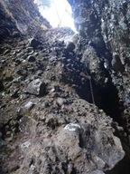 | 高岩 | ★★★ | ★★★ | 2024.11.23 | 雄岳30mチムニー鎖場は長く難易度が高い。他にも雌岳で何ヶ所か岩場がある。 |
| 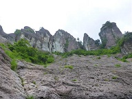 | 御前ヶ遊窟 | ★★★ | ★★★ | 2023.06.10 | 400mのスラブ壁。鎖・ロープの設置は中途半端。ルートファインディングが難しく、失敗すると難しい登攀になる。 |
| 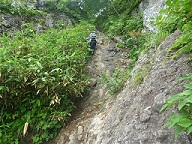 | 戸隠山 | ★★★ | ★★★ | 2012.08.07 | 鎖場が連続する登山道。蟻ノ戸渡りは高度感がある。 |
| 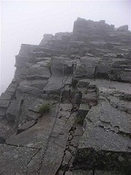 | 西穂高岳～奥穂高岳 | ★★★ | ★★★ | 2009.08.08 | 西穂～奥穂はジャンダルムをはじめ数多くのピークがあり、岩場鎖場が連続する。日本の登山道の中では屈指の難易度を誇るルートだ。 |
| 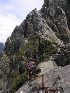 | 大キレット | ★★★ | ★★★ | 2009.08.08 | 北アルプス3大キレットの一つで、岩場が連続する。穂高岳と槍ヶ岳を結ぶ北アルプスを代表する名ルート。 |
| 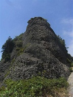 | 八海山（八ツ峰） | ★★★ | ★★★ | 2008.08.09 | 八海山八ツ峰の鎖場。垂直の鎖場が連続する。迂回路あり。 |
| 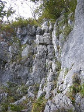 | 二子山 | ★★★ | ★★★ | 2007.10.13 2008.06.15 | 石灰岩でできた美しい岩山。西岳の登り（上級者コース）は鎖がないため、普段鎖に頼っている人は戸惑うかも。岩場・鎖場が続くスリルのあるコース。 |
| 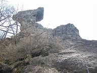 | 裏妙義 | ★★★ | ★★★ | 2007.04.28 2008.04.26 | 難易度の高い鎖場が連続するコース。チムニー鎖場の通過がポイント。オプションで登れる丁須ノ頭は高度感があり、極めて危険。 |
| 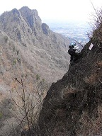 | 妙義山 | ★★★ | ★★★ | 2008.03.30 | 鷹戻しをはじめ難易度の高い鎖場が連続する。鎖に捕まらないと通過できない場所が多いため、腕の疲労に注意。 |
| 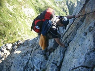 | 不帰キレット | ★★★ | ★★★ | 2007.08.11 | 北アルプス3大キレットの一つで、唐松岳～天狗ノ頭まで鎖場が連続する。展望が良く爽快感溢れるコース。 |
 | 碧岩 | ★★★ | ★★ | 2024.03.30 | 碧岩山頂直下の岩場。2つの岩場があり、2つ目の方は垂直に近く難易度が高い。隣の大岩への登山道も岩尾根だ。 |
| 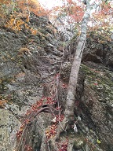 | 天丸山 | ★★★ | ★★ | 2023.11.04 | 天丸山山頂直下にある岩場。傾斜がきつく長い岩場で、鎖ではなくロープなので上り下りが難しい。 |
| 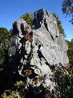 | 鶏冠山 | ★★★ | ★★ | 2014.09.27 | 人の訪れ少ない爽快な岩尾根。第3岩峰は鎖がなく迂回路を示す標識があるが、直登できる。 |
| 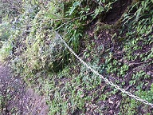 | 愛鷹山 | ★★★ | ★★ | 2010.10.27 | 位牌岳～越前岳に続く稜線にある鎖場。登山道崩壊により閉鎖された登山道だが、踏み跡はある。設置された鎖は管理されていないと思われるが、鎖に頼らないと通過が困難な場所がある。難易度の高い登山道であり、総合的な登山技術が要求される。 |
| 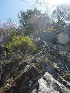 | 赤岩尾根 | ★★★ | ★★ | 2010.05.15 | 両神山の近くにある赤岩峠～八丁峠に至る尾根は赤岩尾根と呼ばれ岩場が連続する。登山道はあまり整備されておらず、岩場を登る技術だけでなく総合的な登山技術が問われる。八丁峠からは立入禁止の標識があるが、赤岩峠側には存在しない。 |
| 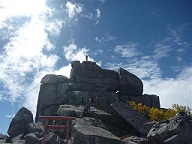 | 金峰山 | ★★★ | ★ | 2012.09.29 | 山頂にある五丈石はオプションで登ることができる。鎖などは設置されていないため難易度は高く、多数の挑戦者がいるが登頂に成功するのは半分以下。最後の部分は若干岩が彫られていて手をかけることができる。登ったは良いが下りられないということが無いように。 |
| 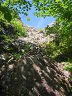 | 武尊山 | ★★ | ★★★ | 2025.07.06 | 川場野営場からのコースは岩場が多くあるルート。迂回できる岩場も多いが、背すり岩は難易度が高く迂回はできない。不動岳を経由しないルートでも少し岩場がある。 |
| 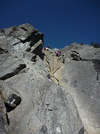 | 乾徳山 | ★★ | ★★★ | 2007.05.19 2009.11.21 2022.06.19 | 登山道に何箇所か鎖場が現れ、最後の長い鎖場を登りきると山頂に到着する。鎖場好きに最適のコース。 |
| 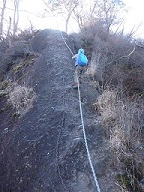 | 岩櫃山 | ★★ | ★★★ | 2020.12.06 | 小さな岩山で鎖場が連続する。特に難易度の高い鎖場は無いが、展望がよく高度感がある。 |
| 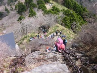 | 石鎚山 | ★★ | ★★★ | 2019.05.01 | 試しの鎖、1～3の鎖と多くの鎖場がある。足場にもできる太い鎖で登りやすいが、傾斜が強いので高度感はある。天狗岳～弥山も鎖場あり。 |
| 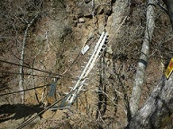 | 十二ヶ岳 | ★★ | ★★★ | 2014.05.11 | 毛無山～十二ヶ岳の稜線は小ピークが連なり、鎖場が連続する。最後のキレットには怖い吊橋が掛かっている。 |
| 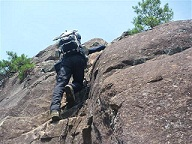 | 嵩山 | ★★ | ★★★ | 2012.07.28 | 小さな岩山。オプションで登れる鎖場が多数ある。山頂直下の鎖場は長いが傾斜は緩い。 |
| 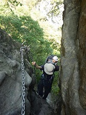 | 妙義山石門巡り | ★★ | ★★★ | 2011.10.08 | 妙義山の中腹にある石門巡り。第1～第4までの石門や大砲岩などの岩場があり、比較的整備された岩場が連続する。 |
| 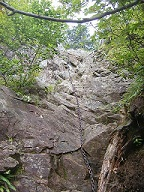 | 両神山（八丁尾根） | ★★ | ★★★ | 2007.07.28 2008.10.18 2010.05.15 | 両神山の八丁尾根は鎖場の連続するルート。一つ一つの鎖場の難易度は高くないが、とにかく数が多い。 |
| 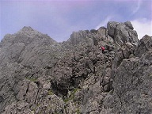 | 北穂高岳 | ★★ | ★★★ | 2009.08.08 | 奥穂～北穂の岩稜歩き。大キレットほどではないが、それなりに難しい岩場が連続して現れる。 |
| 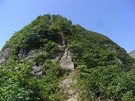 | 中ノ岳～八海山 | ★★ | ★★★ | 2008.08.09 | 越後三山縦走時に通過するルート。特別に難しい鎖場があるわけではないが、全体的に難易度の高い道が続く。 |
| 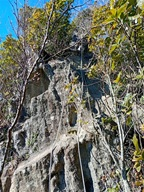 | 小鋸山 | ★★ | ★★ | 2026.01.25 | 嵯峨山～小鋸山～林道は痩せ尾根が連続し、特に小鋸山周辺にはいくつか岩場がある。 |
| 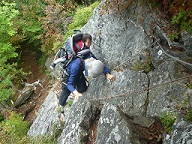 | 諏訪山 | ★★ | ★★ | 2012.10.06 | 最初は緩やかな登山道だが山頂近くになると岩場が何箇所か現れる。 |
| 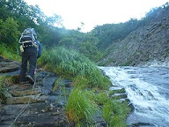 | 巻機山（ヌクビ沢） | ★★ | ★★ | 2012.09.16 | 巻機山ヌクビ沢コースは沢沿いにつけられた難易度の高いコースでところどころに岩場がある。岩が濡れているときはスリップに注意が必要。 |
| 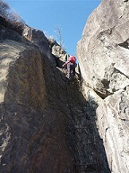 | 子持山 | ★★ | ★★ | 2011.11.26 | オプションで登ることのできる屏風岩、獅子岩にある鎖場。岩の上からは展望が広がる。 |
| 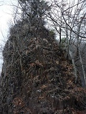 | 立岩 | ★★ | ★★ | 2009.12.04 | 西上州の岩峰・立岩にある鎖場。山容の割に数は少ないが、ところどころに鎖場がある。 |
| 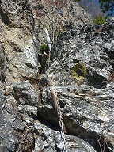 | 大ナゲシ | ★★ | ★★ | 2009.11.03 | 大ナゲシの山頂直下にある岩場。鎖のあるコースと鎖のない岩場コースがある。 |
| 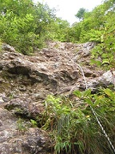 | 御神楽岳 | ★★ | ★★ | 2009.09.05 | 栄太郎新道は御神楽岳の大岸壁を眺めながら登るルート。ところどころに岩場、鎖場がある。 |
| 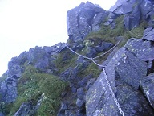 | 西穂高岳 | ★★ | ★★ | 2009.08.08 | 西穂高独標から西穂高岳まで岩稜歩きが続く。以前落雷事故があってから鎖は撤去されたらしいが、ところどころに鎖はある。 |
| 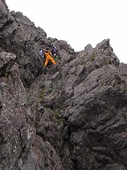 | 槍ヶ岳 | ★★ | ★★ | 2007.08.03 2009.08.09 | 槍ヶ岳の穂先にある鎖場。多くの登山者が憧れる山頂に至る道で、渋滞が発生することもある。 |
| 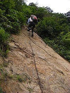 | 巻機山（裏巻機旧道） | ★★ | ★★ | 2009.07.12 | 巻機山の裏巻機旧道コース。全体的に難易度の高い登山道でロープや鎖場が連続する。 |
| 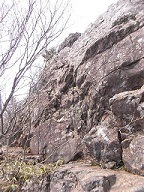 | 大菩薩嶺（富士見新道） | ★★ | ★★ | 2009.05.09 | 大菩薩嶺の富士見新道にある鎖場。マイナールートであまり整備されていない。 |
| 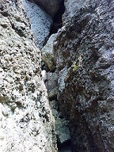 | 迦葉山 | ★★ | ★★ | 2008.11.29 | 中腹にある大きな岩峰に至る長い鎖場。オプションで登ることができる。 |
| 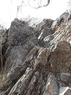 | 古賀志山 | ★★ | ★★ | 2008.04.12 | 赤岩山～古賀志山間にある鎖場。訪問時には通行止めになっていたので訪れる際には注意が必要。 |
| 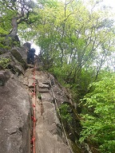 | 高川山 | ★★ | ★ | 2022.05.06 | 山頂直下にある鎖場。手足をかける場所が多いのでさほど難易度は高くない。鎖場を登った先が山頂だ。 |
| 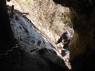 | 三峰山 | ★★ | ★ | 2022.02.27 | 鎖場から岩の穴に入れる珍しい場所。岩穴はそこそこ深く、中に石祠がある。 |
| 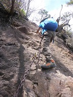 | 谷急山 | ★★ | ★ | 2021.05.03 | 妙義山塊の最高峰だが岩場の数は少ない。1ヶ所鎖場が存在する。 |
| 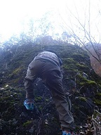 | 高立一本岩 | ★★ | ★ | 2020.11.08 | 高立一本岩の展望ポイントにある岩場。滑りやすい岩に細くて持ちにくい鎖で上に登れる。登っても大して展望は開けない。 |
| 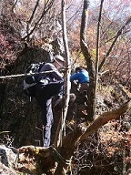 | 桧沢岳 | ★★ | ★ | 2017.11.05 | 崖に囲まれたコルから桧沢岳に向かう場所にある岩場。さほど難しいわけではないが子供のサポートをしにくい岩場で、高さがあるので危険度は高い。 |
| 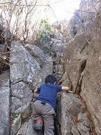 | 小楢山 | ★★ | ★ | 2007.11.17 2017.11.03 | 小楢山の南にある幕岩にある鎖場。幕岩はオプションでスキップすることもできるが岩の上は展望が良い。 |
| 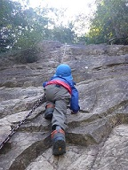 | 伊豆ヶ岳 | ★★ | ★ | 2006.12.16 2017.10.01 | 伊豆ヶ岳の有名な鎖場。傾斜は緩いが長いため、高度感がある。落石に注意。 |
| 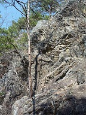 | 仙人ヶ岳 | ★★ | ★ | 2010.03.27 | 犬返しという名の岩場。そこそこ難易度の高い鎖場だ。 |
| 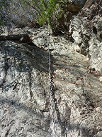 | 城峯山 | ★★ | ★ | 2009.12.23 | 城峯山の山頂下部にある鎖場。将門隠れ岩という名の岩で、オプションで登ることができる。登った先には小さな穴がある。 |
| 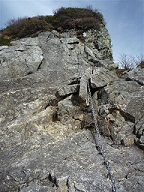 | 大源太山 | ★★ | ★ | 2009.11.08 | 大源太山の山頂手前にある鎖場。尖峰のため山頂直下は急峻な登山道となり、高度感がある。 |
| 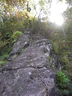 | 角落山 | ★★ | ★ | 2009.09.13 | 角落山の男坂にある鎖場。傾斜は緩いが比較的長い鎖場だ。 |
| 四阿屋山 | ★★ | ★ | 2008.03.01 | 四阿屋山のつつじ新道コースにある鎖場。小規模だが難易度は少々高め。 | |
| 小鹿野アルプス | ★ | ★★★ | 2025.12.28 | 山域全体が岩がちな地形。法性寺の奥ノ院に至る道、そして釜ノ沢五峰の登山道など、あちらこちらに簡単な鎖場がある。 | |
| 戸神山 | ★ | ★★★ | 2024.05.02 | 戸神山を直登するコース。山頂までずっと岩場が続く。傾斜が緩い岩場で難易度は高くないが一箇所鎖場もあり、簡単な岩登りが楽しめる。 | |
| 黒滝山 | ★ | ★★★ | 2016.11.20 | 馬の背の岩場をはじめ、岩場が連続する。難易度が特別高いわけではないが、高度感がある。 | |
 | 天狗山～男山 | ★ | ★★ | 2007.12.24 2025.08.31 | 天狗山への登山道、そして天狗山～男山の稜線は岩がちな登山道で、簡単な岩場が連続する。 |
| モッチョム岳 | ★ | ★★ | 2025.05.02 | モッチョム岳への登山道は傾斜がきつく、所々にロープが設置されている。特に山頂直下は岩場になっている。 | |
| 杓子山 | ★ | ★★ | 2006.11.25 2024.11.30 | 立ノ塚峠～鹿留山は急坂が続き、簡単な岩場が何ヶ所かある。 | |
| 十字峡～中ノ岳 | ★ | ★★ | 2024.06.15 | 十字峡～中ノ岳は急斜面の登山道が続き、何ヶ所か簡単な鎖場がある。 | |
| 粟ヶ岳 | ★ | ★★ | 2024.04.28 | 中央登山道を通って山頂に至る登山道には簡単な岩場が2ヶ所ある。 | |
| 両神山（日向大谷コース） | ★ | ★★ | 2007.07.28 2010.05.15 2022.08.16 | 日向大谷コースにある鎖場。比較的簡単な鎖場が何箇所かある。 | |
| 本社ヶ丸 | ★ | ★★ | 2022.08.11 | 清八山～本社ヶ丸の稜線は岩がちな尾根で、簡単な岩場を何度か通過する。 | |
| 立処山 | ★ | ★★ | 2021.04.18 | 立処山への登り、および明家に向かう北尾根で簡単な岩場を越える。 | |
| 男抱山 | ★ | ★★ | 2021.04.11 | 岩がちな山で、登り下りで岩場がある。鎖はなく、全て簡単な岩場だ。 | |
| 毛無山 | ★ | ★★ | 2020.11.15 | 沢沿いの地蔵峠への登山道、尾根道の登山道、いずれも簡単な岩場がいくつか点在する。 | |
| 大山三峰山 | ★ | ★★ | 2007.03.10 2020.11.01 | スリルのあるコース。よく整備されているため難易度は低い。 | |
| 曲岳 | ★ | ★★ | 2019.11.10 | 観音峠から曲岳に向かう登山道には簡単な岩場をいくつか越える。 | |
| 兜山 | ★ | ★★ | 2019.04.21 | 滑りやすい道や簡単な岩場に何ヶ所か鎖が設置されている。 | |
 | 赤岳 | ★ | ★★ | 2018.11.04 | 文三郎尾根から赤岳に向かうルート。山頂直下は岩場が連続する。登山道はよく整備されている。 |
| 鬼ヶ岳 | ★ | ★★ | 2018.10.21 | 鬼ヶ岳から鍵掛峠に向かう稜線は痩せ尾根で簡単な岩場が連続する。 | |
| 御座山 | ★ | ★★ | 2008.06.14 2018.07.15 | 登り下りと何ヶ所か鎖場が現れる。いずれも難易度は高くない。 | |
| 鈴ヶ岳 | ★ | ★★ | 2017.09.03 | 鈴ヶ岳の山頂直下にある岩場。難易度は高くないが数ヶ所岩場がある。下山時にも通過する必要があるため要注意。 | |
| 岩山 | ★ | ★★ | 2009.04.18 2016.03.21 | 面白い岩場が連続する小さな山。どの岩場も難易度は高くない。しかしコース最後に現れる鎖場は難易度★★★。ツルツル滑って極めて危険なため、ここは通過しない方が無難。 | |
| 御在所岳 | ★ | ★★ | 2015.08.11 | 中道にある鎖場。岩場が所々にあり、比較的難易度の高い登山道だ。 | |
| 大小山 | ★ | ★★ | 2015.04.19 | 小さな山だが岩が多く、簡単な鎖場がいくつかある。 | |
| 岩殿山 | ★ | ★★ | 2008.02.11 2009.03.15 2014.11.23 | 鎖の他に手足をかけられる場所があるため難易度は低い。 | |
| 弥三郎岳 | ★ | ★★ | 2013.11.23 | 岩がちな地形で山頂まで鎖場が連続する。足元までよく整備されているため難易度は低い。 | |
| 奥久慈男体山 | ★ | ★★ | 2013.04.28 | 奥久慈男体山の上級者コースにある鎖場。上級者というほど難易度は高くないが、ところどころに鎖場がある。 | |
| 石裂山 | ★ | ★★ | 2009.04.18 | 山岳信仰の山で岩場が連続するが、急峻なところは梯子がかけられており、全体的に難易度は高くない。 | |
| 五郎山 | ★ | ★ | 2025.11.30 | 鎖場はないが、岩尾根を歩く場所が少しある。 | |
| 同角山稜 | ★ | ★ | 2025.11.22 | ザレた急斜面にある鎖場。同角山稜には、他にも梯子が何度か出てきて、痩せ尾根が続く。 | |
| 黒味岳 | ★ | ★ | 2025.04.30 | 黒味岳への登山道は岩がちで、簡単な岩場がある。掴みやすいロープが設置されている。 | |
| 女峰山 | ★ | ★ | 2023.07.30 | 赤薙山～女峰山の稜線上にある岩場。ロープが一本垂れ下がっている。 | |
| 雨巻山 | ★ | ★ | 2023.02.26 | 御嶽山の手前にある鎖場。傾斜が緩く簡単な岩場ではあるが、そこそこの長さがある。 | |
| 荒神山 | ★ | ★ | 2022.03.20 | 荒神山の登り口付近にある岩場。傾斜が緩く手足を置く場所が豊富にあるため難易度は低い。 | |
| 檜洞丸 | ★ | ★ | 2007.04.07 2021.12.05 | 檜洞丸～犬越路にある小規模な鎖場。 | |
 | 岩手山 | ★ | ★ | 2021.08.05 | 柳沢コース登山道に一箇所ある小さな岩場。 |
| 塔ノ岳 | ★ | ★ | 2006.11.18 2009.01.21 2009.12.19 2020.08.30 | 丹沢表尾根にある行者岳の鎖場。短く簡単な鎖場だが苦戦する登山者もいる。混雑期は渋滞発生ポイントになる。 | |
| 尾白川渓谷 | ★ | ★ | 2019.08.25 | 不動滝の直前にある岩場。スラブ上の岩だが傾斜が緩いのでロープに捕まれば容易に登れる。 | |
| 鹿岳 | ★ | ★ | 2008.01.13 2019.04.28 | 巨大な岩を突き立てたような風貌の山だが、登山道の鎖場の数は少ない。 | |
| 鷹取山 | ★ | ★ | 2018.12.02 | 岩がちな地形の山で途中で簡単な鎖場がある。 | |
| 御堂山 | ★ | ★ | 2015.11.21 | 滝の側にある5m程度の岩場。難易度は高くないが、岩が濡れているため嫌らしい。 | |
| 木曽駒ヶ岳 | ★ | ★ | 2015.08.09 | 中岳の迂回路にある岩場。簡単な岩場だが、横は崖のため高度感がある。 | |
| 瑞牆山 | ★ | ★ | 2012.06.30 | 瑞牆山の山頂近くにある岩場。小さな岩にロープが設置されている。混雑時には渋滞が発生する。 | |
| 伊予ヶ岳 | ★ | ★ | 2007.02.17 2012.02.04 | ロープありの急登。難易度は低いが砂が堆積しているため滑りやすい。 | |
| 谷川岳 | ★ | ★ | 2009.11.07 | 谷川岳マチガ沢ルートにある鎖場。 | |
| 大真名子山 | ★ | ★ | 2009.10.18 | 大真名子山にある小さな鎖場。難易度は高くない。 | |
| 奥穂高岳 | ★ | ★ | 2009.08.08 | 穂高岳山荘から奥穂高岳に向かう登山道上にある鎖場。登山者が多いが登りと下りでルートが分けられていないため混雑しやすい。 | |
| 武尊山 | ★ | ★ | 2009.06.28 | 武尊牧場から武尊山に至るコースにある簡単な鎖場。 | |
| 蛭ヶ岳 | ★ | ★ | 2009.06.20 | 檜洞丸～蛭ヶ岳間にある鎖場。疲労時には通過に注意。 | |
| 秩父槍ヶ岳 | ★ | ★ | 2009.03.26 | 岩峰だが直接岩場を登る場所はほとんどない。野鳥観察小屋から分岐するコースは閉鎖中の登山道で全体的な難易度は高いが、岩場はロープが張られた一箇所のみ。ロープに頼らなくても通過可能。 | |
| 鍬柄岳 | ★ | ★ | 2009.02.11 | 鍬柄岳山頂直下にある鎖場。岩壁をトラバースするように鎖が設置されている。 | |
| 鍋割山 | ★ | ★ | 2009.01.21 | 雨山峠～鍋割峠に至る稜線上にある鎖場。砂が堆積していて滑るため少々登りにくい。 | |
| 妙高山 | ★ | ★ | 2008.09.21 | 足元が階段状に掘られているため難易度は高くない。比較的長い鎖場のため落下すると危険。 | |
| 越後駒ヶ岳 | ★ | ★ | 2008.08.08 | 越後駒ヶ岳の山頂近くにある鎖場。傾斜は緩い。 | |
| 大岳山 | ★ | ★ | 2008.01.19 2008.07.06 | 大岳山から鋸山に至る稜線上にある鎖場。木の根っこに捕まれるので登り下りしやすい。迂回路もある。 | |
| 笹間ヶ岳 | ★ | ★ | 2008.01.05 | 山頂部の岩にある鎖場。梯子も用意されている。 |